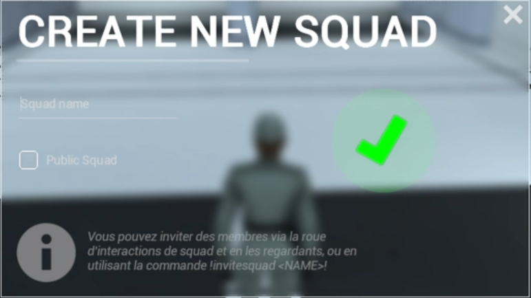
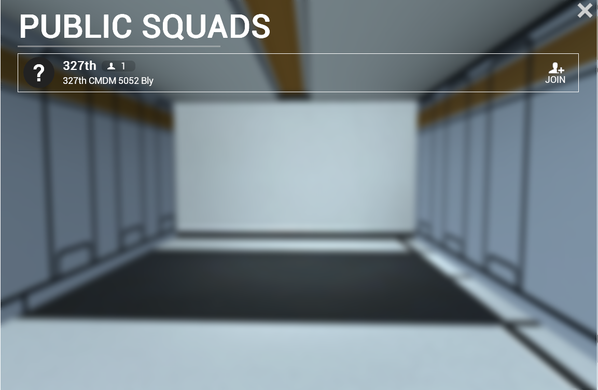

Protocoles de communication du 327th Corps Stellaire
Le système de Squad permet d'organiser les clones en groupes opérationnels au sein d'une même mission. Chaque Squad possède un chef désigné et peut être publique ou privée. La communication interne au squad est primordiale pour la coordination sur le terrain.

La roue d'interactions Squad est accessible en appuyant sur G et permet d'avoir des interactions courtes et clair.

Menu modifiable lorsque le menu G est ouvert avec un click sur la personne qu'on veut gérer, pour une vision plus clair de l'effectif disponible en fonction des rôles.
Toute communication doit être précédée d'une demande de prise de parole. Pour ce faire, vous devrez utiliser un langage protocolaire.
Exemple : « 327th pour commandement de mission. Parlez », puis attendre confirmation.
Les communications se divisent en trois parties : l'appel, la conversation, et le final.
Exemple complet : « 327th pour commandement de mission. Nous sommes actuellement sur le point Cresh, toute présence ennemie a été éradiquée, en attente de nouveaux ordres. »
La communication débute toujours par un appel. Dans l'exemple ci-dessus, l'appel est « 327th pour commandement de mission. »
La conversation est la partie essentielle de la communication. Pour une bonne compréhension radio, les règles suivantes doivent être respectées :
Le moyen mnémotechnique pour être sûr d'avoir une communication complète :
Exemple : « 327th pour commandement de mission. Nous sommes actuellement sur le point Cresh, toute présence ennemie a été éradiquée, en attente d'une nouvelle affectation. »
Le final ponctue chaque transmission. Il se compose, suivant le cas, des termes de procédure suivants :
Dans notre exemple, le final est « Parlez. »
Ces termes standardisés sont utilisés pour structurer et ponctuer toutes les communications radio.
| Terme | Signification & Usage |
|---|---|
| Parlez | Invitation à l'interlocuteur à commencer ou continuer sa transmission. Utilisé en fin d'appel pour donner la parole. |
| Attendez | Demande à l'interlocuteur de patienter. La communication sera reprise dès que possible. |
| Reçu | Confirme que le message a bien été reçu et compris dans son intégralité. |
| Correct | Confirme que l'information transmise ou répétée est exacte et sans erreur. |
| Répétez | Demande à l'interlocuteur de retransmettre tout ou partie du message, en cas d'incompréhension ou de mauvaise réception. |
| Terminé | Indique la fin définitive de la communication. Aucune réponse n'est attendue après ce terme. |
| Compris | Indique que le message a été reçu et que les instructions seront exécutées. |
| Négatif | Réponse négative ou infirmation d'une information. Équivalent radio de "non". |
| Affirmatif | Réponse positive ou confirmation d'une information. Équivalent radio de "oui". |
| Annulez | Annule le message précédent ou l'ordre donné. À utiliser immédiatement après une erreur de transmission. |
| Silence | Ordre de cesser immédiatement toutes les transmissions sur le réseau. Réservé aux situations d'urgence absolue. |
Exercice pratique de communication radio. Lisez attentivement chaque message et formulez la réponse appropriée en respectant les protocoles appris.
COMMANDANT DU 327TH
« Nous sommes huit 327th… 2 ARC, 1 bacta, 2 7ème Légion, 1 Compagnie K et deux sans spécialisations. Les ARC à l'avant, les 7th à côté du TX, les sans spé dans le TX, le Bacta derrière le TX et la CK à distance pour support. »
COMMANDANT DE FLOTTE
« Pour l'ensemble, la 501st, le 327th et le 41st seront en première ligne. Le 104th, le 212th et le 408th seront quant à eux en seconde ligne. La BOS vous serez libre de vos mouvements afin de porter soutien aux différents fronts. Pour rappel l'équipement suivant est autorisé : Grappin, explosifs, Jet Pack. Le lance-flamme est quant à lui prohibé au vu de la zone forestière dans laquelle nous sommes déployés. Une fois vos munitions prises, vous pouvez vous rendre vers vos points d'affectations. »
COMMANDANT DU 327TH
« Des droïdes s'amassent au sud-est du point Besh. Opérateur radio, transmettez une demande de renforts ! »
COMMANDANT DE FLOTTE
« À partir de maintenant, les explosifs sont autorisés ! »
COMMANDANT DU 327TH
« La présence ennemie est trop importante sur Besh, on se replie. Faites connaître notre situation au Commandant de mission et demandez des renforts sur notre position. »
COMMANDANT DE FLOTTE
« À partir de maintenant, les jet-packs sont autorisés ! »